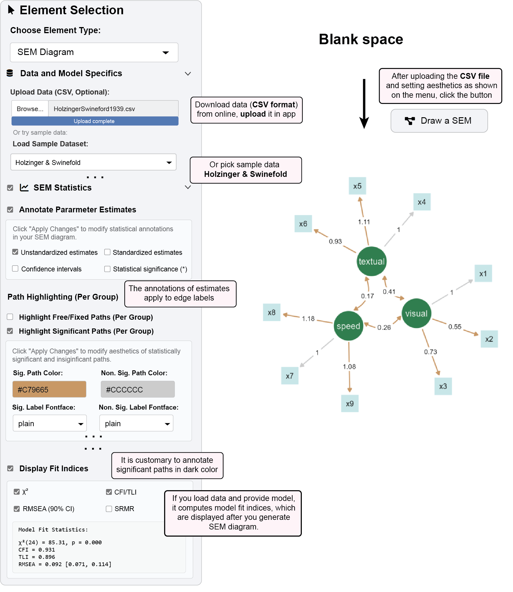
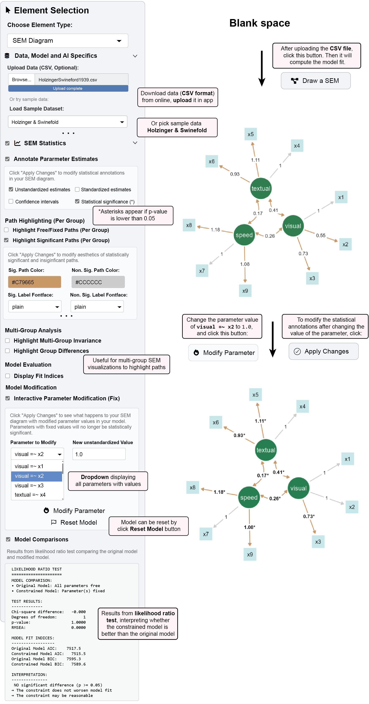

6 Visualize Statistics
ggsem provides statistical tools that work in tandem with visualizations, allowing you to examine model parameters, fit indices, and conduct hypothesis testing directly within your SEM diagrams, for both single- and multi-group analysis.
6.1 Parameter Estimates and Annotations
ggsem automatically annotates your path diagrams with statistical estimates, providing immediate insight into your model’s parameters and their significance.
6.1.1 Example 1: Displaying Parameter Estimates
Load the demonstration dataset in the
ggsemapp from:https://www.smin95.com/HolzingerSwineford1939.csvOr use pre-loaded sample data (
Holzinger & Swinefold) in the app.Specify a CFA model in the lavaan syntax text box.
Visual =~ x1 + x2 + x3 Textual =~ x4 + x5 + x6 Speed =~ x7 + x8 + x9In the “SEM Statistics” panel, check “Annotate Parameter Estimates”
Configure display options:
✅ Unstandardized estimates (default: shown)
□ Standardized estimates
□ Confidence intervals
□ P-values (*)
Click “Draw a SEM” to generate the diagram with statistical annotations
6.1.2 Customizing Display:
Standardized estimates: Useful for comparing effects across different scales
Confidence intervals: Shows 95% confidence ranges for parameter estimates
Statistical-Significance (*): Displays asterisks () indicating statistical significance (p < 0.05). For Bayesian SEM, it displays Bayesian Significance (*) based on whether credible intervals exclude 0.
6.1.3 Significance Highlighting
Automatically emphasize statistically significant paths in your diagram for quick interpretation.
With your model loaded, check “Highlight Significant Paths (Per Group)”
Configure highlighting options:
Significant Path Color:
#C79665(brown)Non-Significant Path Color:
#CCCCCC(light gray)Significant Label Fontface:
plainNon-Significant Label Fontface:
plain
Click “Apply Changes” to update the visualization
- Significant paths and edge labels (p < 0.05) will appear in red
(Optional) Modify the aesthetics of latent nodes into dark green and observed nodes into light green to make them more harmonious with the aesthetics of the paths.
Latent nodes color:
#307e4f(dark green)Observed nodes color:
#c8e6e8(light green)Node label color on observed nodes:
#000000(black)Click “Apply changes” to update the visualization.
6.2 Model Fit Assessment
Evaluate your model’s overall performance with comprehensive fit statistics, which are activated after a SEM diagram with a specific model has been drawn using “Draw a SEM” button.
Check “Display Fit Indices” in the SEM Statistics panel
Select desired fit measures:
✅ χ² (Chi-square test of model fit)
✅ CFI/TLI (Comparative/Tucker-Lewis Fit Index)
✅ RMSEA (Root Mean Square Error of Approximation with 90% CI)
□ SRMR (Standardized Root Mean Square Residual)
Click “Apply Changes” to view fit statistics
Results appear in the fit statistics output panel
Commonly used cutoffs: CFI > 0.90, TLI > 0.90, RMSEA < 0.08
Sample Output:
Model Fit Statistics:
χ²(24) = 85.305, p < .001
CFI = 0.931, TLI = 0.896
RMSEA = 0.092, 90% CI [0.071, 0.114]6.3 Interactive Parameter Modification

Test theoretical constraints and conduct “what-if” analyses by directly modifying parameter values.
6.3.1 Example 2: Fixing and Testing Parameters, and Updating the Visualization Output
Here, we are continuing from Example 1 using the same dataset.
Check “Interactive Parameter Modification (Fix)”
Select a parameter from the dropdown (e.g., “Visual =~ x2”)
Set a new value in “New Unstandardized Value” (e.g., 1.0)
(Optional) Check the box “P-values (*)“, it will display asterisks for statistically significant paths
(Optional) Configure highlighting options:
Significant Path Color:
#C79665(brown)Non-Significant Path Color:
#CCCCCC(light gray)Significant Label Fontface:
boldNon-Significant Label Fontface:
plain
Click “Modify Parameter” then “Apply Changes” to update the visualization
- Note that the path between
visualnode andx2node is no longer significant, and its parameter value updates to 1
- Note that the path between
6.3.1.1 What happens:
The selected parameter is fixed to your specified value
All other parameters are re-estimated conditional on this constraint
Fit statistics update to reflect the constrained model
Visualization is updated with the modified parameter estimate after clicking “Apply Changes”.
6.4 Model Comparison Tests
Compare nested models using likelihood ratio tests to evaluate which model is better.
Your baseline model is saved when you generate a SEM diagram by clicking “Draw a SEM”.
This is your initial SEM with all parameters free
Note the fit statistics (χ², CFI, RMSEA)
Create a constrained model by fixing a parameter in “Interactive Parameter Modification (Fix)”(e.g., set “Visual =~ x2” to 1.0).
- Apply changes and note the new fit statistics
Check “Model Comparisons” to view likelihood ratio test results
Sample Output:
LIKELIHOOD RATIO TEST
=====================
MODEL COMPARISON:
• Original Model: All parameters free
• Constrained Model: Parameter(s) fixed
TEST RESULTS:
-------------
Chi-square difference: -0.000
Degrees of freedom: 1
p-value: 1.0000
RMSEA: 0.0000
MODEL FIT INDICES:
------------------
Original Model AIC: 7517.5
Constrained Model AIC: 7515.5
Original Model BIC: 7595.3
Constrained Model BIC: 7589.6
INTERPRETATION:
---------------
✓ NO significant difference (p >= 0.05)
→ The constraint does not worsen model fit
→ The constraint may be reasonableInterpretation:
Significant χ² difference (p < 0.05) suggests the constraint worsens model fit
Non-significant difference suggests the constraint is empirically supported
Complete Statistical Analysis:
Load data and specify your theoretical model
Draw initial SEM with unstandardized estimates and fit indices
Review significance: Use highlighting to identify significant paths with specific aesthetics
Assess fit: Check if CFI > 0.90, RMSEA < 0.08 for acceptable fit
Test constraints: Use parameter modification to test theoretical constraints
Compare models: Use likelihood ratio tests for nested model comparisons
Finalize: Lock the diagram with optimal parameterization
6.5 Multi-Group Analysis
ggsem also provides options for users to explore multi-group SEM analysis. It highlights paths that are group-specific or constrained across groups (Highlight Multi-Group Invariance), as well as statistically different paths between groups (Highlight Group Differences). This only works when two SEMs have been drawn with a single multi-group model. Interested readers can continue to the next chapter (code-free) to learn how to plot multi-group SEM visualizations or other subsequent chapters (code-based).